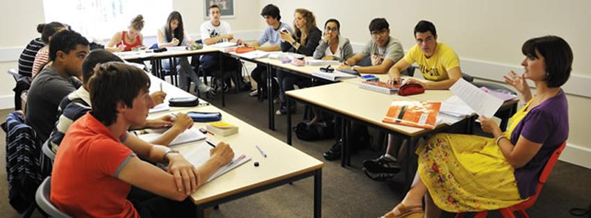

First,to provide students an opportunity to learn more effective ways of studying.Secondly,to provide students with the opportunity to get acpuainted with other students from their class in a freindly atmosphere. Lastly, to enable students to share notes and ideas with their peers for a broader understanding of the course.

This website is created to assist all students, disability, and non-disability at Riverbay College.The primary objective is to improve the academic performance of the students and to brighten the image of the college. Secondly, to enable the students to achieve their dream in the future by acquiring better job opportunities after they have completed the course.